Markdown Plus は、ローカルの Markdown を Chrome で読みやすく表示します。ファイル参照、アウトライン、図の表示、編集、共有のための機能も備えています。最初から順に読むことも、必要な操作から読むこともできます。
画面の例は英語のインターフェースとサンプル文書を使用しています。本文中の操作名は日本語表示に合わせていますが、サンプル文書は英語のままです。画像を選ぶと原寸で確認できます。Chrome 自体のダイアログは、ブラウザの言語に従います。
最初のドキュメントを開く
拡張機能を初めて使う場合は、ここから始めてください。Markdown ファイルをビューアで開いたら、このガイドのほかの機能も試せます。
- 上のリンクから Chrome ウェブストアの公式掲載ページを開き、Chrome に追加、拡張機能を追加の順に選びます。Chrome 116 以降をご使用ください。
- アドレスバーに
chrome://extensionsと入力し、Markdown Plus の詳細を開きます。ファイルの URL へのアクセスを許可するをオンにすると、開いたローカルファイルを拡張機能が読み取れるようになります。 - ローカルの Markdown ファイルを Chrome のタブにドラッグするか、下のショートカットで開きます。直接開ける拡張子は
.md、.markdown、.mdown、.mdcです。権限を許可する前から開いていたタブは、再読み込みしてください。 - Chrome の拡張機能メニューから Markdown Plus を固定します。ツールバーのアイコンを選ぶとポップアップが開き、閲覧、エディタ、プラグイン、履歴のタブから日常的な設定を変更できます。
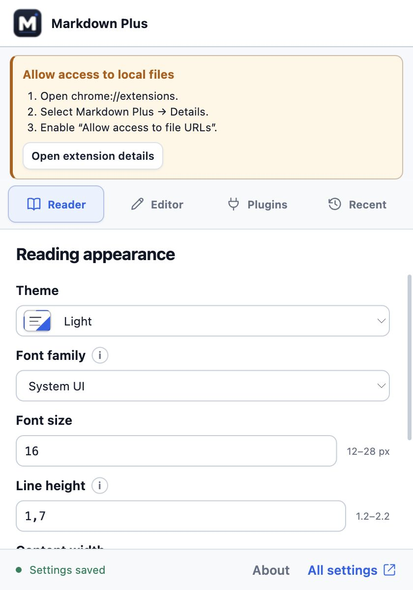
スクリーンショットを原寸で見る小さなファイルで、いろいろ試そう
markdown-plus-tour.md をダウンロードしてパソコンに保存し、Chrome で開きます。見出し、タスク、表、コード、アラート、数式、Mermaid の図が含まれています。次の章から、このファイルを使って試せます。サンプルの内容は英語です。
画面の見方を知る
中央にドキュメント、左にファイル、右にアウトラインとドキュメントの操作が並びます。サイドパネルを隠したり幅を変えたりすると、本文の表示領域を広げられます。
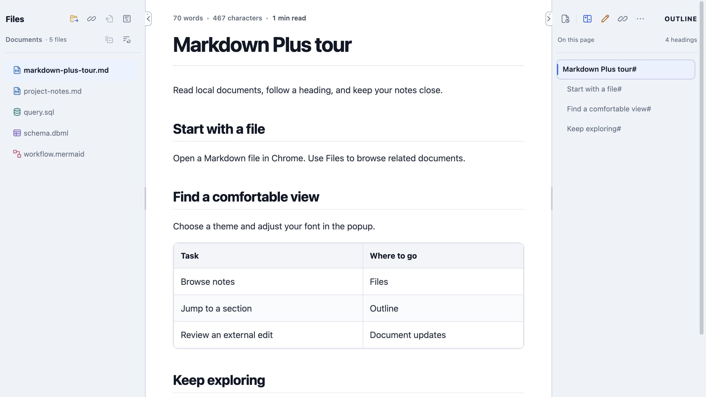
スクリーンショットを原寸で見るビューアの構成をひと目で
- ファイル — 別のドキュメントやフォルダを開く。
- ドキュメント — 読みやすく整えられた Markdown を読む。
- アウトライン — 見出しへ移動する。
- 操作 — 更新・編集・印刷・エクスポート。
フォルダをワークスペースとして開く
ファイルパネルのフォルダを開く…から、ノートや資料のあるフォルダを選び、Chrome の確認でアクセスを許可します。フォルダを展開して、対応するファイルを選んでください。Chrome を開き直すと、再度許可が必要になる場合があります。
ファイルの追加・削除・名前変更をした後は、ファイル一覧を更新を使います。ツリーを読み直しますが、開いているドキュメントは再読み込みしません。ファイルが見つからない場合は、すべての設定 → ファイルとワークスペースで .gitignore の除外とスキャンの上限を確認し、一覧を更新してください。
アウトラインの見出しを選ぶと、その位置へ移動します。見出しは Markdown のソースから取得します。ウィンドウが狭いときは、収まらない操作がその他の操作メニューに移動します。
| ファイル形式 | 開き方 |
|---|---|
.md · .markdown · .mdown · .mdc | Chrome で直接、またはファイルパネルから。 |
.txt · .sql · .dbml · .mermaid | 先に Markdown を開き、ファイルパネルから選択します。 |
| 画像 | PNG、JPG/JPEG、GIF、WebP、AVIF、BMP、ICO、APNG、SVG。ファイルパネルから開きます。 |
TXT はそのままのテキストで表示します。SQL と DBML は構文のハイライトに対応します。DBML はソースの表示用で、データベースの図は生成しません。これらの形式は読み取り専用です。単独の Mermaid ファイルは、図とソースを切り替えられます。アウトライン、実験的な編集、ドキュメントのエクスポートは Markdown で利用できます。
ドキュメント内や複数のファイルを検索する
この検索機能は開発中のソースに実装されていますが、リリースバージョンはまだ割り当てられていません。Chrome ウェブストアの配布版で利用できるかは未確認です。
Cmd/Ctrl + F で閲覧中の本文を検索できます。エディタにフォーカスがある場合は、エディタ独自の検索・置換が開きます。表示中のサイドバーも含めてページ全体を検索するには、Chrome のメニューを使ってください。ページ上に読み込まれていない行は、ブラウザの検索対象になりません。
ファイルの虫眼鏡、または Ctrl + Shift + F で、現在のフォルダやワークスペース内の対応テキストファイルを検索できます。macOS では Command ではなく Control を使います。ファイルパネルに検索可能な範囲がある場合、フォルダを選び直す必要はありません。ツリー部分だけが検索表示に変わり、ヘッダーはそのままです。編集中の未保存の下書きや、現在の除外設定とスキャン上限の範囲内にあるサブフォルダのファイルも対象です。
Aa — 大文字と小文字を区別、ab — 単語単位で検索、Á — アクセント記号を区別を組み合わせられます。初期設定では大文字と小文字を区別せず、部分一致で検索し、アクセント記号を区別します。アクセント記号の区別をオフにすると、hai で hải、duong で đường を検索できます。正規表現には対応していません。
入力後、ファイル検索は 250 ms 待って実行されます。検索欄で Enter を押すと、すぐに検索します。新しい結果を取得している間も前の結果は表示されますが、操作できません。結果はファイルごとにまとまり、行番号と短い抜粋が表示されます。結果を開くと該当箇所が強調表示され、フォーカスは一覧に残ります。表示中の検索結果を前後に移動するには、F4、または Shift + F4 を使います。表示されない Markdown 構文への一致は、読み取り専用のソース表示で開く場合があります。一致箇所は黄色、現在の一致箇所はオレンジ色で表示されます。
検索を速くするため、一定量のファイル内容をメモリに一時保存します。検索処理は端末内で行われます。再検索では、現在の一覧にあるファイルの最新の内容を読み直します。ファイル一覧を更新では、ファイルの追加・削除・名前変更を反映します。スナップショットとして開いたフォルダから新しい内容を取得するには、フォルダを選び直してください。すべてのファイルを常時監視したり、内容の索引を永続的に保存したりはしません。
2 MiB を超えるファイルがある場合、2,000 件に達した場合、処理時間の上限である 15 秒に達した場合、結果が不完全になることがあります。部分的な結果の案内を確認し、検索条件を絞るか、必要に応じて更新してください。画像は検索対象ではありません。
読みやすく調整する
ポップアップの閲覧を開きます。テーマを選び、長い段落が読みやすくなるまで文字や本文の幅を調整してみましょう。この設定は、ほかのドキュメントにも適用されます。
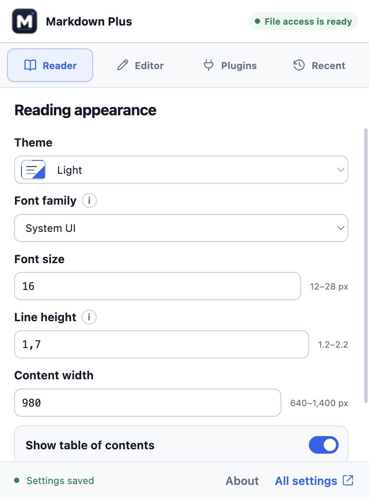
スクリーンショットを原寸で見る文字を好みに合わせる
フォント、12〜28 px の文字サイズ、1.2〜2.2 の行の高さを選べます。フォントのプリセットは、パソコンにインストールされたフォントを使い、利用できない場合は代替フォントを使います。
本文のスペースを整える
本文の幅は 640〜1400 px に設定でき、「目次を表示」のオン・オフも切り替えられます。全般では、ドキュメントの統計やスクロールバーの表示を変更できます。統計には、単語数、スペースを含む文字数、読了時間の目安が含まれます。
閲覧設定をリセットすると、テーマ、文字の設定、レイアウトが初期値に戻ります。言語はすべての設定 → 全般 → 表示言語で変更できます。ドキュメントの本文は翻訳されません。
先頭に戻るで、長いドキュメントの冒頭へ戻れます。アウトラインのリンクはファイル内を移動するだけで、ソースは変更しません。閲覧設定も表示だけを変え、保存済みの Markdown は変更しません。
Markdown の表示機能を試す
Markdown Plus は、見出しや段落以外の表示にも対応しています。練習用ファイルで試してみましょう。登録されているプラグインは、初期状態ですべて有効です。ポップアップのプラグインから管理できます。
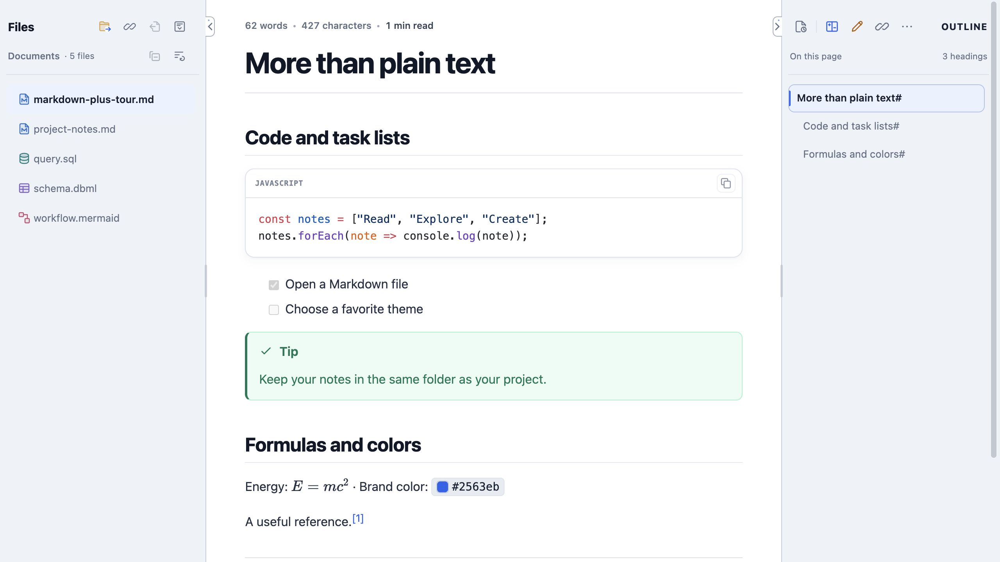
スクリーンショットを原寸で見るコードと表
コードブロックは、構文のハイライトとコピーに対応しています。表も読みやすく表示されます。コードブロックの開始記号の後に javascript などの言語名を指定すると、対応する構文で表示されます。
注記と参照
GitHub 形式のアラート、脚注、絵文字、見出しへのリンクを使えます。タスクリストのチェックボックスは読み取り専用です。チェックのオン・オフは、Markdown のソースを変更して行います。
数式と色
KaTeX は、文中や独立したブロックの数式を表示します。色のプレビューは、対応する色の値に色見本を追加します。色見本を開くと HEX、RGB、HSL をコピーできます。各機能は、プラグインのスイッチでオン・オフできます。
## A small plan
- [x] Open a Markdown file
- [ ] Try a new theme
> [!TIP]
> Keep your notes close to your code.
Inline math: $E = mc^2$
A useful color: #2563eb使う機能を選ぶ
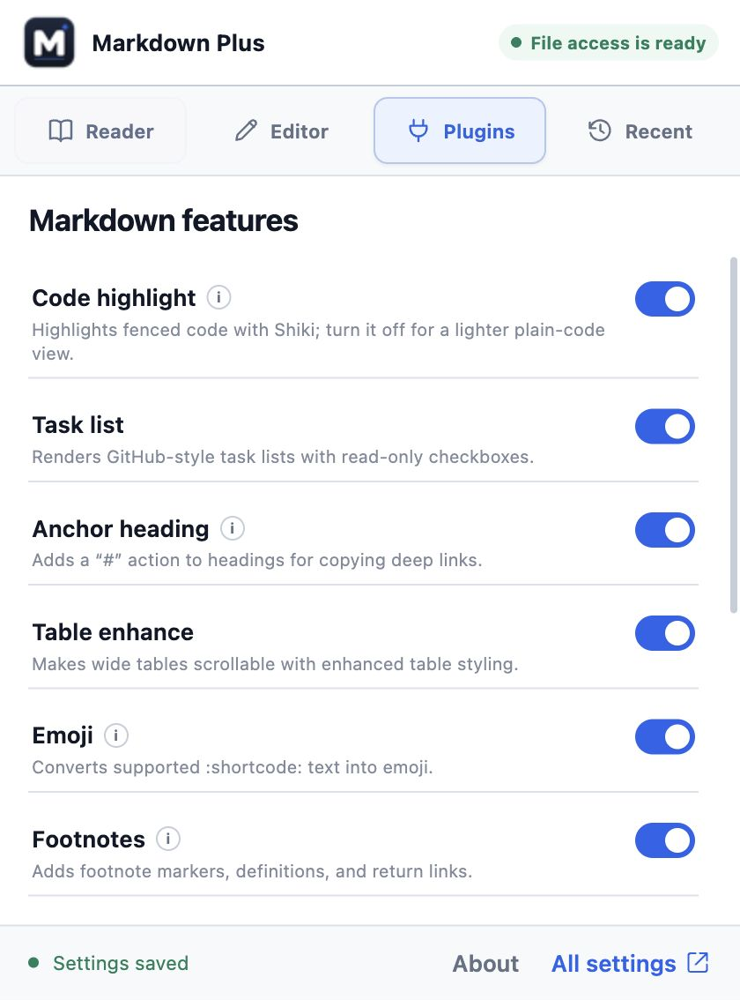
スクリーンショットを原寸で見る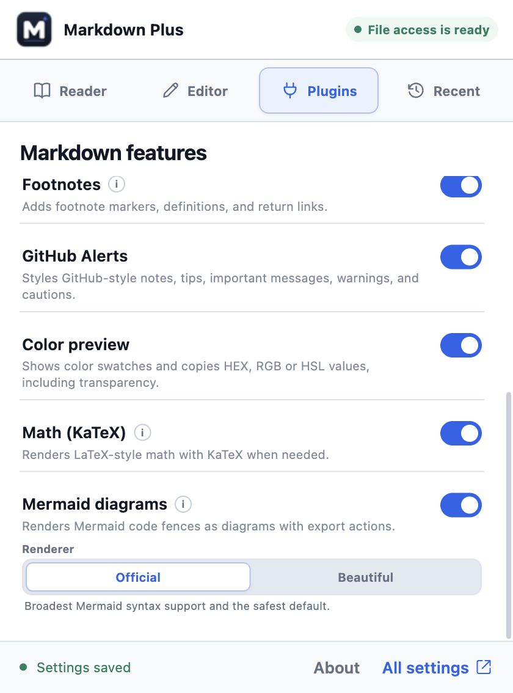
スクリーンショットを原寸で見る練習用ファイルの「A diagram」へ移動し、JavaScript のコードブロックをコピーしてみましょう。数式や #2563eb の色も探してみてください。そのままのテキストで表示される場合は、対応するプラグインのスイッチを確認します。
図や画像を詳しく見る
プラグインが有効な場合、Mermaid のコードブロックは図として表示されます。ファイルパネルから単独の .mermaid ファイルを開き、図とソースを切り替えることもできます。
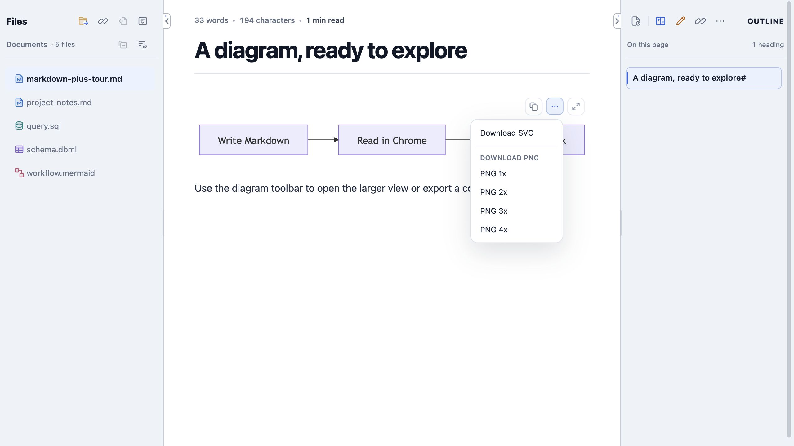
スクリーンショットを原寸で見る- 図や画像を拡大表示で開き、全体表示、ズーム、ドラッグで細部を確認できます。閉じると、ドキュメントに戻ります。
- Mermaid では、ソースのコピーや SVG・PNG へのエクスポートができます。PNG は 1〜4 倍で出力できます。ベクター画像には SVG、より多くのピクセルが必要な場合は高倍率の PNG を使ってください。
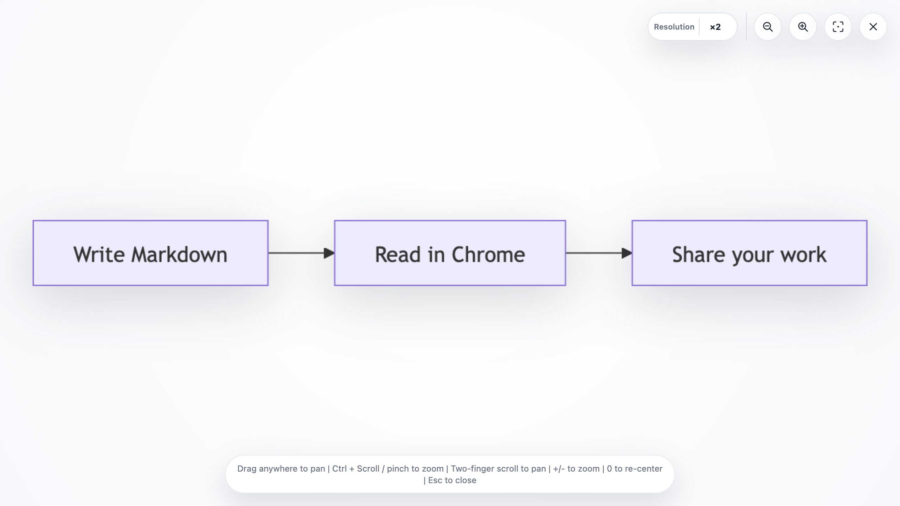
スクリーンショットを原寸で見るMermaid と SVG の拡大表示では、解像度で、ズームとは別にビットマップの細かさを変更できます。ポインターを重ねる、フォーカスする、タップすることで、マイナス・プラスボタンが表示されます。1 倍から 8 倍まで 0.25 刻みで調整できますが、画像サイズとメモリの上限が適用されます。上限は、その画像ではこれ以上上げられないことを示します。変更は開いているプレビューだけに反映され、ソースやエクスポートには影響しません。
ポップアップ → プラグインで、幅広い Mermaid 構文に対応する公式を選ぶか、別のレイアウトの Beautiful を試せます。Beautiful で表示できない場合は、公式に切り替え、ソースの構文を確認してください。
テーマと背景
ポップアップ → 閲覧 → テーマ、またはすべての設定 → テーマ → 使用中の閲覧テーマで組み込みテーマを選べます。ライト、ダーク、ハイコントラスト、カラフルなテーマでも、操作方法は共通です。
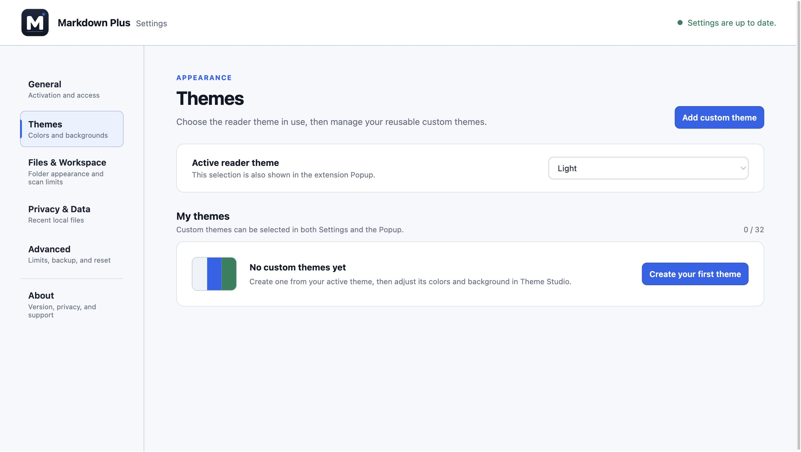
スクリーンショットを原寸で見るカスタムテーマを作る
- カスタムテーマを追加を選び、名前と基本テーマを設定します。基本テーマを変えると下書きの配色がリセットされるため、最初に選んでください。
- ページ、本文、パネル、文字、見出し、リンク、コードの色を調整します。ライブプレビューを見ながら、補助テキストのコントラストも確認してください。
- コードハイライトでは、基本テーマに合わせるか、同梱のシンタックステーマを選べます。エディタの内容とは独立して、表示されるコードの色が変わります。
- 背景を選び、必要に応じてサイズ調整や暗さを変えてから、テーマを作成または変更を保存を選びます。確定するまで、下書きの変更は保存されません。
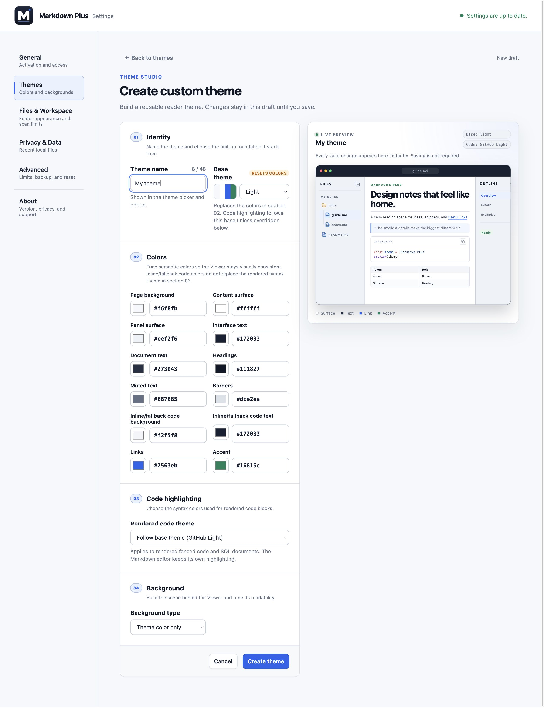
スクリーンショットを原寸で見る背景を選ぶ
テーマの色を使うほか、単色、2 色のグラデーション、5 MiB までのローカルの PNG、JPEG、WebP、AVIF、GIF、APNG を選べます。画像のサイズ調整、位置、繰り返しを設定でき、「暗さ」で本文の読みやすさを調整できます。
アニメーションは、システムに合わせる、アニメーションを再生、静止から選べます。「システムに合わせる」は、動きを減らす設定を尊重します。「静止」はフレームを固定するのではなく、アニメーションする背景画像を非表示にします。
ドキュメントの変更を確認する
別のアプリで編集していますか？ Markdown Plus は、現在のドキュメントに保存された変更を検出できます。動作はすべての設定 → 全般 → ドキュメントの更新で選びます。
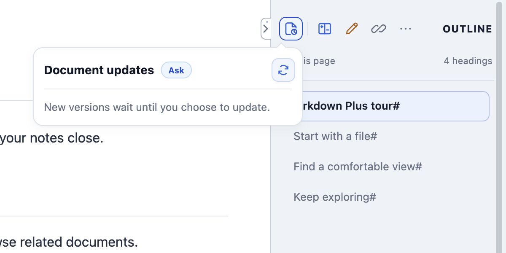
スクリーンショットを原寸で見る| モード | 動作 |
|---|---|
| 確認する — 初期設定 | 変更を確認し、利用者が読み込むまで待機します。表示中の内容を置き換える前に変更を確認したい場合に選びます。 |
| 自動 | ファイルの変更が落ち着き、操作が止まると新しい内容を読み込みます。読み進めていた位置をできるだけ維持します。 |
| オフ | 自動確認を停止します。今すぐ確認を使えば、一度だけ確認できます。 |
ビューアのドキュメントの更新から、変更の確認や読み込みができます。比較できる場合は、変更を表示で追加・削除されたソース行を確認できます。Markdown では影響のあるセクションも表示されます。画像の更新ではソースの比較は行いません。
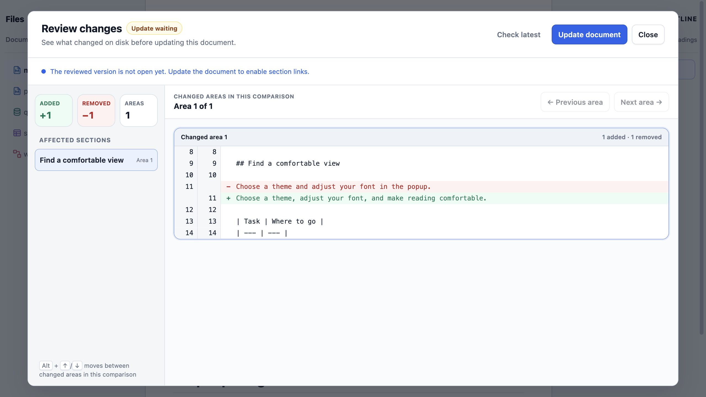
スクリーンショットを原寸で見る開いている比較は、最新の比較を表示を選ぶまで、選択した版のままです。自動モードでは、比較の背後のドキュメントが更新される場合があります。読み込むタイミングを自分で決めたい場合は、確認するを使ってください。
プレビューを見ながら編集する
実験的な機能 · 任意で有効化
エディタは初期状態ではオフです。プレビューを見ながら Markdown を編集し、明示的に確認したローカルファイルに保存できます。
- ポップアップ → エディタで「エディタを有効にする」をオンにします。Markdown ドキュメントを開き、ドキュメントの操作からMarkdown を編集を選びます。
- 確認画面で、編集する元のファイルそのものを選びます。書き込みを許可する前に、フォルダとファイル名の両方を確認してください。元のファイルに保存するために、この選択が必要です。
- プレビューを見ながら編集するほか、集中モードでプレビューを隠せます。検索と置換も使えます。ポップアップ → エディタでは、文字サイズ、タブ幅、折り返し、行番号も設定できます。
- 保存、または Ctrl + S / ⌘ + S を使います。終了する前に保存済みの表示を確認してください。印刷やエクスポートの前には、編集を終了してください。
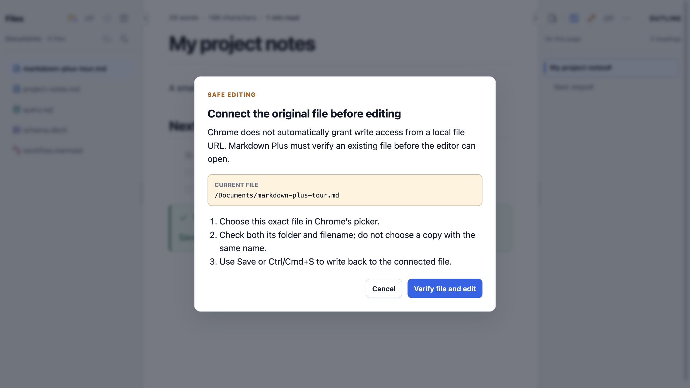
スクリーンショットを原寸で見る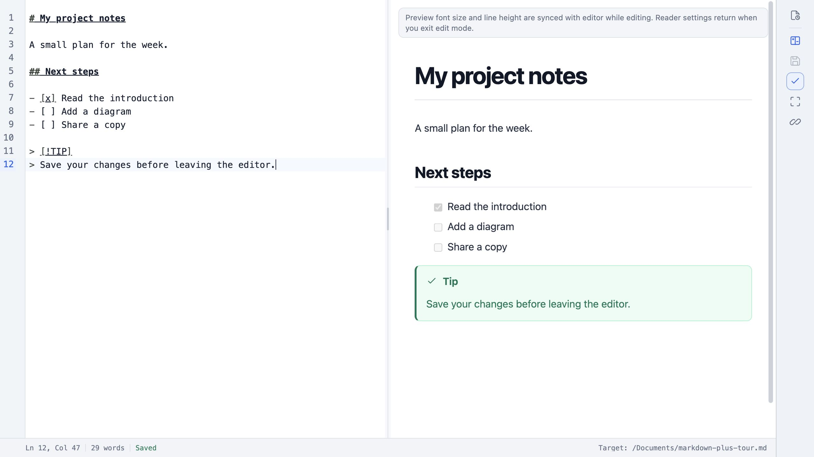
スクリーンショットを原寸で見る印刷・エクスポート・共有
ドキュメントの操作から、読みやすい形式のコピーを書き出せます。ウィンドウが狭いときは、一部のコマンドがその他の操作メニューに移動します。
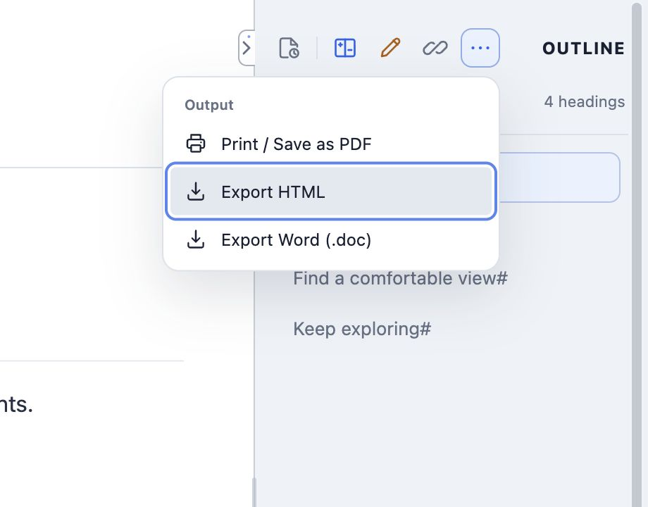
スクリーンショットを原寸で見る印刷・PDF 保存
印刷 / PDF に保存を選びます。Chrome の印刷画面でプリンターまたは「PDF に保存」を選び、プレビューとページ設定を確認してから保存してください。
Markdown をエクスポート
Markdown では、HTML にエクスポートまたはWord（.doc）にエクスポートを選びます。空き幅に応じて、ドキュメントをエクスポートまたはその他の操作メニューに表示されます。出力される .doc は Word 互換形式です。図の SVG/PNG エクスポートは、図のメニューから行います。
先に編集を終了してください。ドキュメントはローカルで処理しますが、参照する外部リソースのホストに接続する場合があります。エクスポートした HTML の一部のリソースは CDN を利用する場合があります。詳しくはプライバシーポリシーをご確認ください。
プライバシーポリシーを読む設定・プライバシー・バックアップ
ポップアップのすべての設定から、設定全体を開けます。多くのスイッチや選択項目はすぐに保存されます。数値の上限は変更を保存で確定し、テーマの下書きには専用の保存操作があります。ステータス表示も確認してください。
- 全般：言語、有効化、スクロールバー、統計、更新モード、ファイル URL へのアクセス状態。実際のアクセス許可は、Chrome の拡張機能の詳細で変更します。
- ファイルとワークスペース：ツリーのガイド線、
.gitignoreの除外、ワークスペースの復元、スキャン上限。階層数 0は、選択したルートだけが対象です。変更は次のスキャンや一覧更新から適用されます。 - プライバシーとデータ：最近使ったファイルの記録、保存件数、履歴の消去。ポップアップの履歴からローカルの Markdown を開き直せます。履歴を消去しても、ファイル自体は削除されません。
- 詳細設定：単独で開く TXT、SQL、DBML、Mermaid ファイルの表示サイズ上限。次回開くときから適用され、Markdown は対象外です。更新確認の5 MiB制限とは別です。
- 製品情報：インストール済みバージョン、互換性、サポートへのリンク。不具合を報告するときは、バージョンもお知らせください。
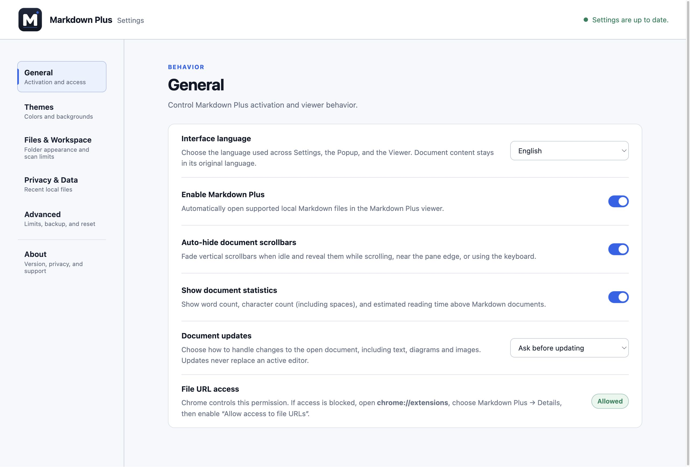
スクリーンショットを原寸で見る設定をバックアップする
詳細設定でJSON をエクスポートを選びます。復元するには、設定をインポートのJSON を選択を使います。保存前にファイルが検証されます。設定とカスタムテーマの構成は含まれますが、ドキュメント、最近使ったファイルの履歴、背景画像は含まれません。
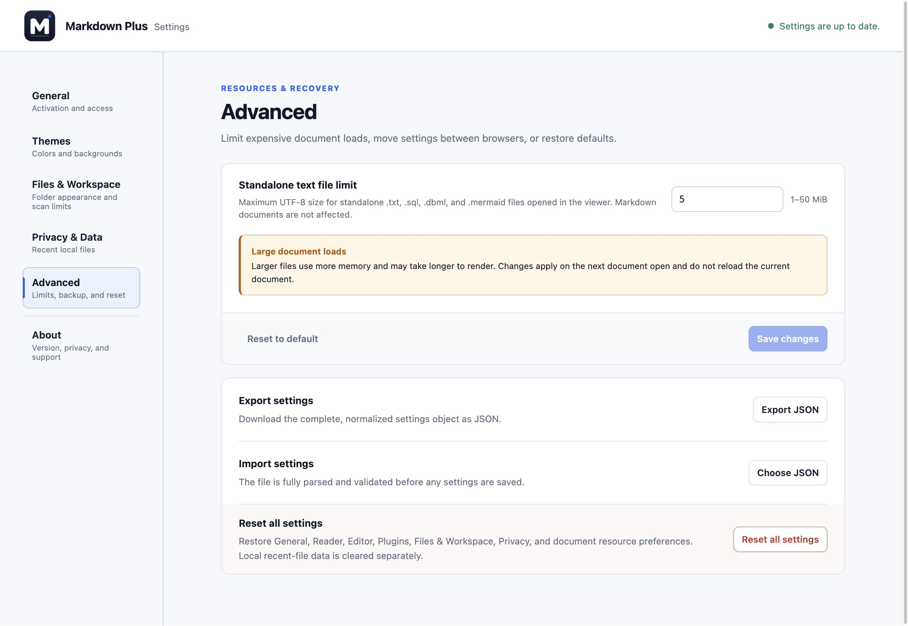
スクリーンショットを原寸で見るドキュメントはブラウザ内で処理され、開発者が運営するアップロードサービスは使いません。設定は Chrome で同期される場合がありますが、最近のパス、エディタのファイル参照、背景画像は端末内に残ります。ウェブサイトのテーマ変更は、このサイトだけに反映されます。
トラブル対処
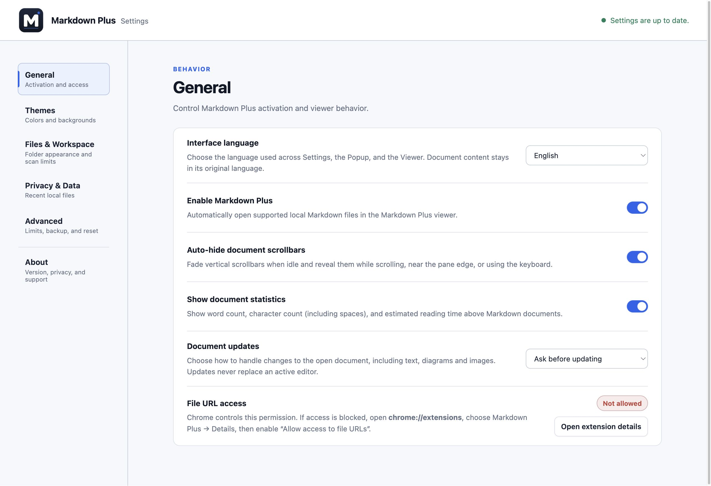
スクリーンショットを原寸で見るMarkdown がそのままのテキストで開きます。
Chrome → 拡張機能 → Markdown Plus → 詳細で、ファイルの URL へのアクセスを許可するをオンにします。すべての設定 → 全般 → Markdown Plus を有効にすると拡張子 .md/.markdown/.mdown/.mdc を確認し、タブを再読み込みしてください。
ウェブサイトでも使えますか？ SQL を直接開けますか？
拡張機能は、ローカルの Markdown ファイルを開くと有効になります。ウェブ上の Markdown は、ダウンロードしてローカルのコピーを開いてください。SQL、DBML、テキスト、Mermaid、画像は、先に Markdown を開いてから、ファイルパネルで選びます。
ツリーにファイルが表示されません。
ファイルとワークスペースで .gitignore とスキャンの階層数・ファイル数・フォルダ数の上限を確認し、ファイル一覧を更新を選んでください。必要ならフォルダへのアクセスを再度許可します。履歴のファイルが移動している場合は、新しい場所から開き直してください。
別のアプリで保存しても、表示が変わりません。
ドキュメントの更新 → 今すぐ確認を使い、「確認する」モードで更新を読み込みます。タブを表示したままにし、5 MiB の上限も確認してください。ファイル一覧を更新はツリーだけを更新します。スナップショットのワークスペースでは、フォルダを選び直してください。
保存すると競合のエラーが表示されます。
編集開始後に、別のアプリが元のファイルを変更しています。残したい下書きをコピーしてから、保存済みの内容を確認し、正しいファイルを開き直してください。「保存」は強制上書きしません。Chrome がアクセスエラーを表示する場合は、書き込み権限を確認します。
別の端末で背景が表示されません。
背景画像は同期されず、JSON バックアップにも含まれません。別の端末でカスタムテーマを編集し、元の画像を選び直して保存してください。
設定を保存できません。
保存ステータスでエラーの内容を確認してください。短時間に変更を繰り返した場合は、少し待って再試行します。設定の保存領域がいっぱいと表示された場合は、カスタムテーマのデータを減らすか、使わないテーマを削除してから再試行してください。
解決しない場合は、Chrome と拡張機能のバージョン、試した操作、非公開情報を取り除いた小さなサンプルを添えて Issue を作成してください。
GitHub でサポートを受ける